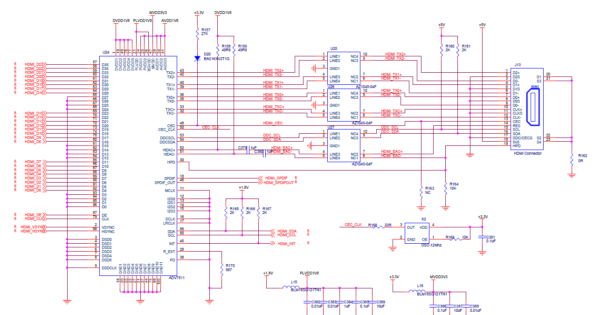
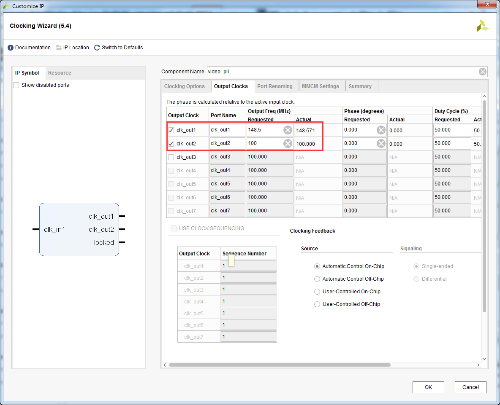
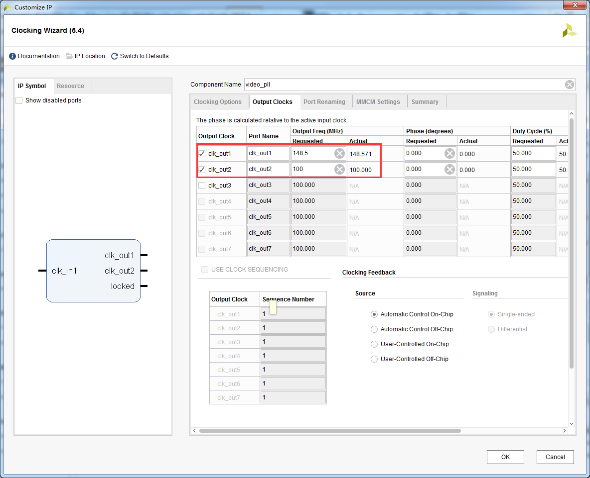

HDMI输出实验¶
实验VIvado工程为“hdmi_output_test”。
前面我们介绍了led闪灯实验，只是为了了解Vivado的基本开发流程，本章这个实验相对LED闪灯实验复杂点，做一个HDMI输出的彩条，这也是我们后面学习显示、视频处理的基础。实验还不涉及到PS系统，从实验设计可以看出如果要非常好的使用ZYNQ芯片，需要很好的FPGA基础知识。
硬件介绍¶
开发板使用ADV7511做为HDMI编码芯片，将24位RGB编码输出TMDS差分信号。ADV7511功能强大，本实验只使用其中一小部分，将RGB24视频数据显示出来即可。
{kind=link}
ADV7511芯片需要通过I2C总线配置寄存器才能正常工作，从原理图中可以看出I2C总线连接到PL端的IO，可以通过PL直接配置。
程序设计¶
本实验实现通过HDMI显示彩条，实验中设计了视频时序发生和彩条发生模块“color_bar.v”，I2C Master 寄存器配置模块“i2c_config.v”,配置数据查找表模块“lut_adv7511.v”。
具体代码在这里不再一一介绍了，大家自己去看。下面针对每个模块实现的功能给大家做一下简介：
顶层模块top.v是项目的顶层文件，主要是实例化4个子模块（时钟模块vidio_pll, 彩条生成模块color_bar和I2C配置模块i2c_config和配置查找表模块lut_adv7511。
彩条产生模块color_bar.v是产生8种颜色的VGA格式的彩条，彩条分别为白、黄、青、绿、紫、红、蓝和黑。产生分辨率为1920x1080刷新率为60Hz的彩条,也就是所谓的1080P的高清视频图像。所以这个模块会输出R（8位）G（8位）B（8位）图像信号、行同步、列同步和数据有效信号。
时钟模块video_pll调用的是一个Xilinx提供的时钟IP，通过输入的系统时钟产生一个100Mhz时钟和一个1080P的像素时钟148.5Mhz。生成时钟IP的方法是点击Project Manager目录下的IP Catalog,再选择FPGA Features and Design->Clocking->Clocking Wizard图标。
 

{kind=link}
添加XDC约束文件¶
添加以下的约束文件到项目中，在约束文件里添加了时钟和HDMI相关的管脚。
#Clock signal set_property IOSTANDARD LVCMOS18 [get_ports sys_clk] set_property PACKAGE_PIN J14 [get_ports sys_clk] create_clock -period 20.000 -name sys_clk -waveform {0.000 10.000} [get_ports sys_clk] set_property PACKAGE_PIN K13 [get_ports hdmi_clk] set_property PACKAGE_PIN G16 [get_ports {hdmi_d[0]}] set_property PACKAGE_PIN E16 [get_ports {hdmi_d[1]}] set_property PACKAGE_PIN J15 [get_ports {hdmi_d[2]}] set_property PACKAGE_PIN E15 [get_ports {hdmi_d[3]}] set_property PACKAGE_PIN F15 [get_ports {hdmi_d[4]}] set_property PACKAGE_PIN G15 [get_ports {hdmi_d[5]}] set_property PACKAGE_PIN F14 [get_ports {hdmi_d[6]}] set_property PACKAGE_PIN H14 [get_ports {hdmi_d[7]}] set_property PACKAGE_PIN J13 [get_ports {hdmi_d[8]}] set_property PACKAGE_PIN K12 [get_ports {hdmi_d[9]}] set_property PACKAGE_PIN B11 [get_ports {hdmi_d[10]}] set_property PACKAGE_PIN C12 [get_ports {hdmi_d[11]}] set_property PACKAGE_PIN D13 [get_ports {hdmi_d[12]}] set_property PACKAGE_PIN A12 [get_ports {hdmi_d[13]}] set_property PACKAGE_PIN C13 [get_ports {hdmi_d[14]}] set_property PACKAGE_PIN A13 [get_ports {hdmi_d[15]}] set_property PACKAGE_PIN D14 [get_ports {hdmi_d[16]}] set_property PACKAGE_PIN D15 [get_ports {hdmi_d[17]}] set_property PACKAGE_PIN A14 [get_ports {hdmi_d[18]}] set_property PACKAGE_PIN B14 [get_ports {hdmi_d[19]}] set_property PACKAGE_PIN A15 [get_ports {hdmi_d[20]}] set_property PACKAGE_PIN B15 [get_ports {hdmi_d[21]}] set_property PACKAGE_PIN D16 [get_ports {hdmi_d[22]}] set_property PACKAGE_PIN B16 [get_ports {hdmi_d[23]}] set_property PACKAGE_PIN K15 [get_ports hdmi_de] set_property PACKAGE_PIN C11 [get_ports hdmi_hs] #set_property PACKAGE_PIN C17 [get_ports hdmi_nreset] set_property PACKAGE_PIN B12 [get_ports hdmi_vs] set_property PACKAGE_PIN A17 [get_ports hdmi_scl] set_property PACKAGE_PIN C16 [get_ports hdmi_sda] set_property IOSTANDARD LVCMOS18 [get_ports hdmi_scl] set_property IOSTANDARD LVCMOS18 [get_ports hdmi_sda] set_property IOSTANDARD LVCMOS18 [get_ports {hdmi_d[*]}] set_property IOSTANDARD LVCMOS18 [get_ports hdmi_clk] set_property IOSTANDARD LVCMOS18 [get_ports hdmi_de] set_property IOSTANDARD LVCMOS18 [get_ports hdmi_vs] set_property IOSTANDARD LVCMOS18 [get_ports hdmi_hs] set_property PULLUP true [get_ports hdmi_scl] set_property PULLUP true [get_ports hdmi_sda] set_property SLEW FAST [get_ports {hdmi_d[*]}] set_property DRIVE 8 [get_ports {hdmi_d[*]}] set_property SLEW FAST [get_ports hdmi_clk] set_property SLEW FAST [get_ports hdmi_de] set_property SLEW FAST [get_ports hdmi_hs] set_property SLEW FAST [get_ports hdmi_scl] set_property SLEW FAST [get_ports hdmi_sda] set_property SLEW FAST [get_ports hdmi_vs] |
下载调试¶
保存工程并编译生成bit文件，连接HDMI接口到HDMI显示器，需要注意，这里使用1920x1080@60Hz，请确保自己的显示器支持这个分辨率。
{kind=link}
下载后显示器显示如下图像

实验总结¶
本实验初步接触到视频显示，涉及到视频知识，这不是zynq学习的重点，所以没有详细介绍，但zynq在视频处理领域用途广泛，需要学习者有良好的基础知识。实验中仅仅使用PL来驱动HDMI芯片，包括I2C寄存器配置，当然I2C的配置还是使用PS来配置比较合适。
ZYNQ-7000开发平台 FPGA教程 - Alinx官方网站